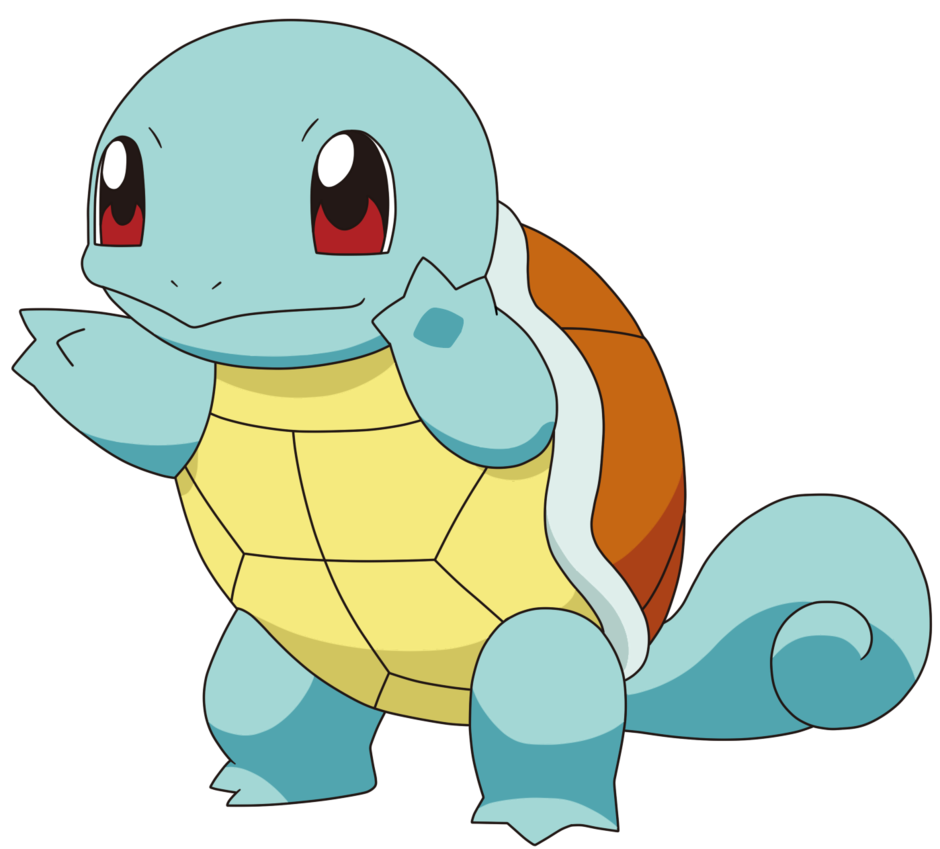

<div class="carousel text-center mb-5">
    <div id="carouselExampleInterval" class="carousel slide" data-bs-ride="carousel">
      <div class="carousel-inner text-center">
        <div class="carousel-item active" data-bs-interval="2000">
          
        </div>
        <div class="carousel-item" data-bs-interval="2000">
          
        </div>
        <div class="carousel-item" data-bs-interval="2000">
          
        </div>
      </div>
    </div>
  </div>
  <div class="container text-center text-light mt-5">
    <h3><i>«Pokémon forti. Pokémon deboli. Sono distinzioni dettate dall’egoismo. Gli allenatori davvero in gamba
        dovrebbero vincere con i loro <strong>preferiti</strong>.»</i></h3>
  </div>
